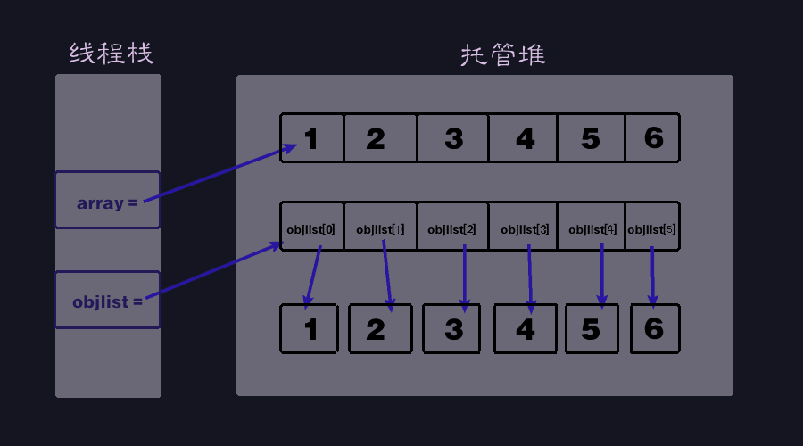

常见的值类型和引用类型
值类型：
- 无符号类型：byte,ushort,uint,ulong
- 有符号类型：sbyte,short,int,long
- 浮点类型：float,double,decimal
- 布尔类型：bool
- 字符型：char
- 枚举：enum
- 结构体：struct
- 指针：int*,float*,……
- 可空类型：int?,float?,……
引用类型：
- 类：class
- 接口：interface
- 数组：xxx[]
- 委托：delegate,Func<>,Action<>
- 其他：string,DateTime……
值类型和引用类型的在内存上区别
值类型实例一般保存在线程栈中，因此不受GC的控制，缓解了托管堆中的压力。值类型的实例就是自己本身。值类型创建时，runtime会为其分配一个内存空间到栈上。
引用类型一定分配在托管堆中，在C#中受到GC的控制，以此过多的引用类型会导致GC的次数，以致于性能下降。引用类型被创建（new）时，runtime会创建两个内存空间，一个分配在栈上用于保存实例，一个分配在堆中用于保存指向实例的内存地址。
ps：值类型不一定都是保存在线程栈中的
如果值类型是方法内部创建的，则被保存在线程栈上；
如果值类型是引用类型的成员变量，则跟随引用类型被存储在托管堆中。
值类型和引用类型的转换（装箱与拆箱）
装箱
装箱就是将值类型转换成引用类型，过程为：- 在托管堆中分配内存，容量为：实例字段 + 类型指针 + 同步块索引
- Copy字段到刚分配的堆内存中
- 返回堆中新分配对象的地址，该地址是指向值对象的引用
int num = 5; object obj = num;//装箱
拆箱
拆箱就是将已装箱的值类型（装箱之后就是引用类型了）转换成值类型，过程为：
- 获取托管堆中属于值类型那部分字段的地址，
- 将引用对象中的值Copy到位于线程堆栈上的值类型实例中。
object obj = 5; int i = (int)obj;
语句块与GC
语句块
一般可以把C#中语句块分为四个层级：
底层：
- 一层：条件分支、循环语句块
- 二层：函数语句块
中层：
- 三层：类、接口、结构体语句块块
顶层:
- 四层：using语句
变量可以声明在底层和中层语句块中，逻辑代码只能写在底层语句块中。
变量若写在底层语句块中，则是临时变量，若写在中层语句块中，则是全局变量。
GC
在C#中，对于临时变量（没有在外部被记录的变量）：
结构体和类
public struct StructTest
{
float num1;
int num2;;
Object obj;
}
public class ClassTest
{
float num1;
int num2;
Object obj;
}
对以上结构体和类分别声明：
static void Main(string[] args)
{
//结构体
StructTest st = new StructTest();
//类
ClassTest ct = new ClassTest();
}
它们在堆栈中的内存分配情况分别为：
Struct结构体：
在栈中，为st分配了一个空间，分别用于存放num1的实例、num2的实例、obj的地址；在声明结构体后（new），在堆中开辟了一个空间用于存放obj的引用，而此时栈中的obj的值为指向堆中新内存的地址;
总结：在结构体中，栈存值实例和引用地址，堆存引用实例
Class类：
在栈中，为ct分配了空间，用于存储堆中的地址；在堆中分配了空间，分别用于存放num1的实例、num2的实例、obj的地址；声明类后（new），在堆中为obj额外分配了新的空间，用于存储obj的实例。
总结: 在类中，栈存类的引用地址，堆存值实例、引用实例和引用地址
更多的区别总结：
| \ | Struct结构体 | Class类 |
|---|---|---|
| 数据类型 | 值类型 | 引用类型 |
| 储存的内存空间位置 | 线程栈 | 托管堆 |
| 特性 | 不具有继承和多态的特性（但是可以继承接口），因此不能被protected保护访问符修饰 | 继承、封装、多态 |
| 构造函数 | 必须初始化所有成员变量 | 随意 |
| 显示的无参构造函数 | 不能声明（因为默认自带了一个） | 可以声明（将隐藏隐式的无参构造函数） |
| 析构函数 | 不能声明 | 可以声明 |
| static修饰符 | 不存在静态的结构体 | 可以被修饰 |
| 内部声明自身 | 不能在结构体内部声明自身结构体 | 可以在内部声明自身类 |
值类型数组和引用类型数组
int[] array = new int[]{1,2,3,4,5,6};
object[] objlist = new object[]{1,2,3,4,5,6};
对于数组的声明，其实和类与结构体的区别类似：
值类型数组：栈中存数组引用的地址，堆中存数组实例；
引用类型数组：栈中存数组引用的地址，堆中存数组的实例和引用，其中每个引用分别指向各自的实例。

特殊的引用：string驻留池
string作为一种特殊的引用类型却往往表现出值类型的行为，最特别的是它的不变性，当我们同时new两个相同字符串的string时，检查地址会发现指向的是同一个实例对象。
```C#
string a = "ssss";
string b = "ssss";
//a和b均指向同一地址
```
这是由于CLR在初始化时维护了一张哈希表（驻留池），其中键为字符串，值为指向托管堆中字符串的引用。JIT在编译时，会检查驻留池中的字符串，如果没有找到，则在托管堆中构造一个指向该字符串的对象引用，并将该字符串和引用添加至散列表中。
```C#
string a = "abc";
string b = a;
a = "abcdef"
Console.WriteLine("b="+b);
//输出：b=abc
```
在上面的程序中之所以会表现出值类型的行为，是因为string b = a;并不是b指向了a的引用，而是指向了驻留池中的字符串”abc”。
is和as:对类型的判断和转换
as
Object obj = new Object(); Type type = obj as Type;//用强制转换的方法则需要try-catch保护，因为这是线程不安全的as操作符对于 目标类型属于目标类型或者目标类型的派生类型 才能转换成功，否则返回null；
注意as操作符不能对值类型进行转换。
is
Object obj = 1; if (obj is int) { int value = (int) obj; } //或者 int value = obj is int ? (int)obj : default(int); //对于非空类型转换成值类型 int v; int? r = 5; v = r is int? ? (int)r : 0;is关键字会对给定类型进行检测其是否兼容(对对象检测是否是is后面类型的类或派生类，因此这是安全的),并返回一个bool类型；
注意is的左边不能是匿名方法(lambda表达式除外)。